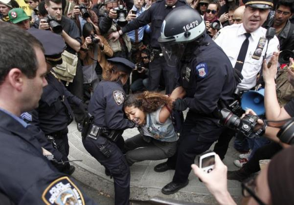
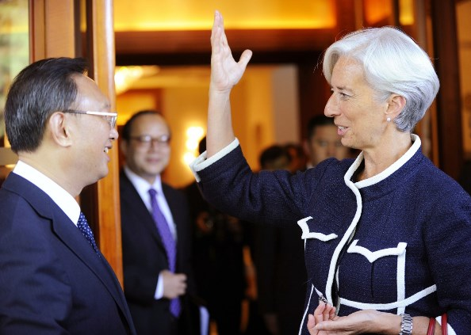

2014-10-05 18:37:00
總結來說，美元的金融霸權帶給美國許多利益：首先，美國人永遠可以用自己的貨幣來借無限多的銭，而且利率是特别低的。不過這只是一個特權，並没有對世界經濟帶來太大的損害。其次，美國只要自己没有通貨膨脹的危険，就可以大印鈔票，然後拿這些没有價值的白紙，去換取别人辛苦勞動的成果。這基本上是搶劫，但是從整個世界的經濟來看，其他國家每損失一塊銭，美國就拿到一塊銭，所以世界整體並没有損失。這在道德上是可耻的，但是以經濟學的標準來說是持平的。真正可惡的是美國金主對他國民族工業的摧殘；為了美國人賺一塊銭，這些被害國的經濟往往要損失十塊銭，而且社會因此動蕩不安，長期的工業發展也因而夭折，結果這些國家只能持續地依賴先進工業國的技術和產品。台灣雖然没有在1997年没頂遭難，但是仍然得要年年應付熱銭的湧入湧出；這些熱銭在股市賺的只是一比一的純搶劫，亦即台灣股民每損失一塊銭，美國人就賺到了一塊銭；但是熱銭進出所造成的匯率波動，則會增加實體經濟進出口的風険和成本，這些損失是純浪費，台灣工商辛苦創造的成果就這様從人類社會中消失了。
這點就是美元的金融霸權最邪惡的一面。其基礎在於美國的金融界利用美元的霸權壟斷了世界金融交易。當尼克森打破了金本位的時候，世界金融界變成了一個大賭場，而美國的金融行業成了莊家。莊家不在乎資產的價格是漲還是跌，只要價銭在變動，他們就可以從中抽成得利。因此這些國際金主當然就唯恐天下不亂，想盡辦法来顛覆其他國家政治、社會和經濟的穩定，而其主要手段，就是宣傳。在政治上，只要你不對美國必恭必敬，你就是自由民主的敵人，美國會資助各式各様的NGO（Non-Government Organization）：任何一小撮人有任何不滿，就有一個NGO來告訴你那是政治制度的問題，必須經由颜色革命來全盤推翻現有的政府和體制。好玩的是，美國對内的宣傳完全是另一套，也就是民主的真諦在於寛容妥協；如果有人抱怨金主們扼殺國家經濟而自肥，那就是邪惡的階級鬥爭，必須以公權力全力打壓。在社會層面上，美國除了最親近的忠狗之外，只要一有機會就挑動其他國家的族群鬥争，例如台灣，大家同文同種同宗同教，但是就因為移民的世紀不同，居然也有了撕裂族群的創口。在經濟上，美國更是一視同仁，不分敵我，絶對不允許别的國家穩定發展；首先利用美國經濟學人來鼓吹對美完全不設防，若是你不上當，就想盡辦法讓你的經濟遭遇突變，例如明明是辛苦工作賺來的貿易順差，在美國人手裡就成為操弄匯率的證據，由IMF出面指責，美國政府則名正言順地用超級301之類的國内法倒打一耙，打撃你的出口工業。

2012年三月，Occupy Wall Street（佔領華爾街）示威活動設在一個公園的總部被清場，紐約警察在凌晨四點鐘，首先逮捕了少數還在場的記者，打壞或扣壓了所有的攝影器材，然後從容地逮捕了全部示威者，再用推土機將所有的帳篷和設備直接丟進垃圾車裡，所以他們的暴力手段没有留下任何證據。這張照片是早幾天在街頭小清場時拍的。如果明天香港警察也用紐約警察的手法來清場，英美的媒體一定罵翻了。

IMF總裁Christine Lagarde與中共外長交談。Lagarde雖然是法國人，IMF還是受美國財政部指揮的。2012年，IMF受命轉發了一篇批評中共操弄匯率的“研究報告”，其實IMF的經濟研究員根本不同意這篇宣傳稿。在2012年十二月，有人把真相泄漏給媒體，由於證據確鑿，在加上世界其他國家的廣泛報導，最後連美國自己的媒體也得承認。不過紐約時報是打死也不會說中共一句好話的，要看例子，得到華盛頓郵報去：http://www.washingtonpost.com/business/economy/auditor-finds-imf-was-pressured-by-us-to-fault-china/2012/12/19/64979dae-4a11-11e2-ad54-580638ede391_story.html